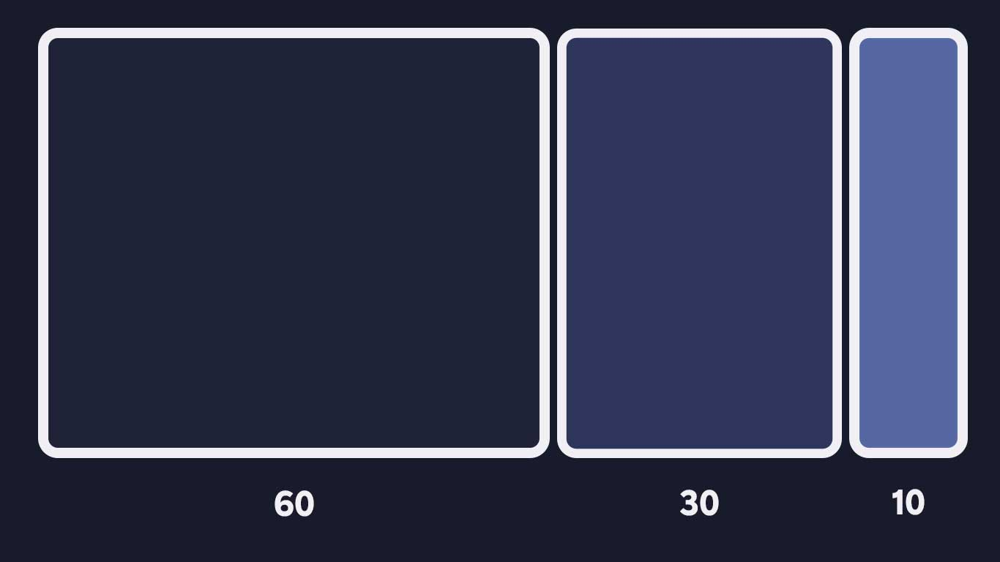

Meet Stefano Peschiera, a digital designer and firm believer that color goes a long way in creating great web design. Stefano even created a free Sketch plugin called Hue that offers a collection of hand-picked color palettes to help you create beautiful websites and apps. The Hue system is based on Stefano’s own process for selecting effective website color schemes. Today, he’s sharing what this process looks like.

Color is essential to good web design and should be very carefully considered. It goes without saying that brand recognition and color go hand-in-hand and the color choices you make can impact how potential customers view your business.
Throughout my career, I’ve learned that the right color scheme will go a long way in creating a site that is appealing and well received by your viewers.
I’ve found a simple workflow to master color in my user interface design that I’d like to share with you. Hopefully, it’ll help streamline your process for selecting effective and balanced color palettes for website design and beyond. Let’s get started!
The most effective website and app color scheme will follow a 60-30-10 ratio. This means that the main color is applied to 60% of the website design, the secondary color is applied to a further 30%, and the last 10% is used as the accent color that contrasts with the two main colors.
When choosing the three different shades, remember the accent color (10%) should be the most vibrant as it will emphasize critical website items like call-to-action elements. The main color (60%) should be a neutral that’s easy on the eyes, and the secondary color (30%) should contrast nicely with the main color to create visual interest.
Distributing complementary colors with these proportions in mind will help to visually organize and add balance to your design.
Mother Nature is the best designer you can take inspiration from. To find my palette, I usually browse Unsplash and extract three main colors from a photo that match the 60-30-10 rule. I make sure to take the most vibrant color and use it as the accent color in my design. This will make the call-to-action elements more effective and the overall web page design more digital and contemporary.
Once I have my color palette ready, the next thing I do is wireframe my design. I try to focus on spacing and layout elements first because having this kind of constraint is very productive and will save you a lot of time later on when applying your color scheme.
Even though there’s no color in the wireframe at this stage, that doesn’t mean it needs to look boring! I like using different gray tones to help make the first wireframe more visually appealing. Afterward, I apply the color palette and iterate my layout before inserting visual elements that are functional and attractive.
One of the most important color theory tricks I’ve learned is to avoid using gray colors without saturation. In real life, pure gray colors barely exist—the same goes for pure black. Remember to always add a bit of saturation to your color. This will subconsciously make the right color appear more natural and familiar to users.
Color is a tricky concept to master, especially in the digital space. The tips I’ve mentioned above should help ease the process of harnessing the color wheel–finding and applying the right colors to your web designs to further the design’s overall effectiveness. Remember, the best way to learn how to create stunning color schemes is practice—so get started today and have fun exploring different color combinations!